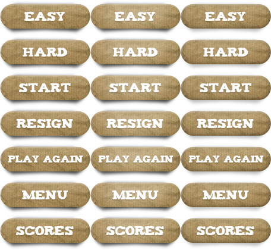

Other CAAT actors
CAAT.Button
This actor object's been deprecated and it functionalities are already available in CAAt.Actor via the method setAsButton().
CAAT.Button instances are CAAT.SpriteActor. Thus a buton is defined with a CompoundImage instance to get button's different states images.
A simple setup must be performed with a call to the method initialize( compound_image, iNormal, iOver, iPress, iDisabled, fn). This method sets up the image, as defines on such image what sub image indexes will be adressed to draw the button on normal, mouseover, pressed and disabled states. The fn parameter defines the callback function that will be called upon mousepress event.
The method setEnabled( bool ) sets the button enabled or disabled.
Example
This example is the same as Behave as button example, but with CAAT.Button instances instead.
var director= new CAAT.Director().initialize(
700,
100,
document.getElementById('_c1') );
var scene= director.createScene();
new CAAT.ImagePreloader().loadImages(
[
{id:'botones', url:'resource/botones.png'}
],
function( counter, images ) {
if ( counter==images.length ) { // when it is done loading
director.setImagesCache(images);
// an image of 7 rows by 3 columns
var ci = new CAAT.CompoundImage().initialize(
director.getImage('botones'), 7, 3);
var b1 = new CAAT.Button().initialize(
ci, 0, 1, 2, 0,
function(button) {
alert('easy pressed');
}
).
setLocation(0, 30);
var b2 = new CAAT.Button().initialize(
ci, 6, 7, 8, 6,
function(button) {
alert('start pressed');
}
).
setLocation(1.5 * ci.singleWidth, 30);
scene.addChild(b1);
scene.addChild(b2);
CAAT.loop(10);
}
});
The image used for the example is:
